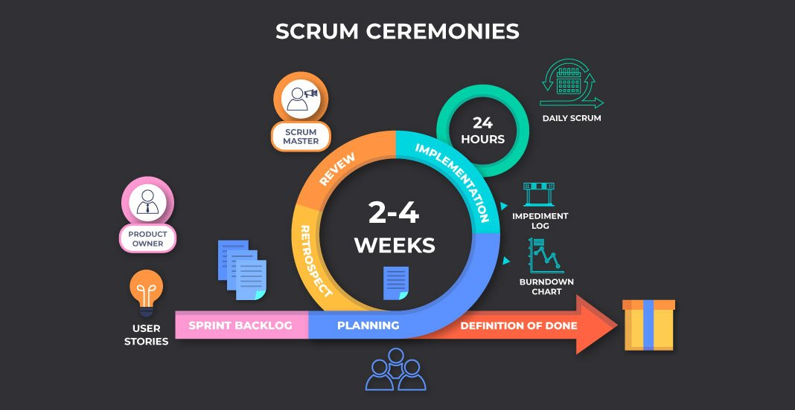

Keep Pushing Persistence Is A Key To Bravery
September 29, 2022 by Johvahn Brown
Computing is not an easy task; it is tedious, time consuming, and sometimes even discouraging. Fighting on is difficult, but the reward is well worth it.
My former school's motto was "The Brave May Fall But Never Yield." Being unyeilding means that you will persevere against all odds, not allowing obstacles
and failures to weigh you down or push you away from the success you desire.
Fight the battle of learning with zeal and resolve, and face the challenges with courage and determination. Do not judge yourself based on a failure or a degree.
Measure your life by your dreams and continue to pursue them. Keep moving forward with courage, and the day of your success will come.
While you're learning, try to find satisfaction in your work and pretend you're satisfied.
Remind yourself that you had a good day. Do it with a smile, not a scowl.
Your positive energy will shine through. If you act like you're having fun, you'll find that you are.
Learn to be grateful for and proud of your struggles. They are what will shape you into the innovator you desire.
They will program a flashlight to guide you through the darkness.
Agile Development and Scrum
September 29, 2022 by Johvahn Brown
Software project managers are responsible for ensuring that software is delivered on time and within the budget constraints of the project.
This would necessitate an agile project management approach as opposed to a plan-driven approach. SCRUM is an agile development methodology that focuses on managing iterative development.
which is appropriate for agile development SCRUM takes an agile development approach in three stages.
The first phase is to create an outline plan to help establish the overall goals of the project. This is then followed by
SCRUM relies heavily on the sprint cycle. During this phase, work from the backlog is selected, and the team then organizes
themselves to advance the software The team is isolated from the customer and the organization during the development stage. So, to capitalize on this
To bridge the communication gap, a Scrum master is assigned, and it is his or her responsibility to interface with the company. This will ensure that the team
is not distracted from the task they have chosen to complete while also maintaining a level of communication. The team would also hold scrum meetings on a daily basis.
This is where they go over the progress of the software they're working on as well as the work that needs to be done that day.
Typically, an increment to the software is delivered at the end of the sprint cycle. This software increment is said to be finished, with no further work required on it.